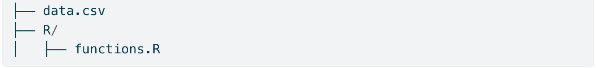
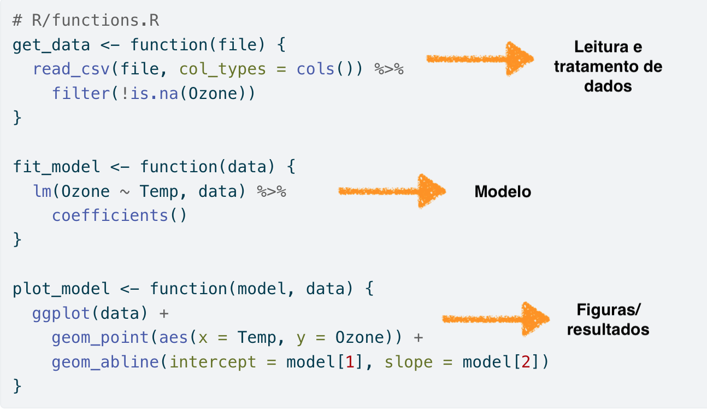
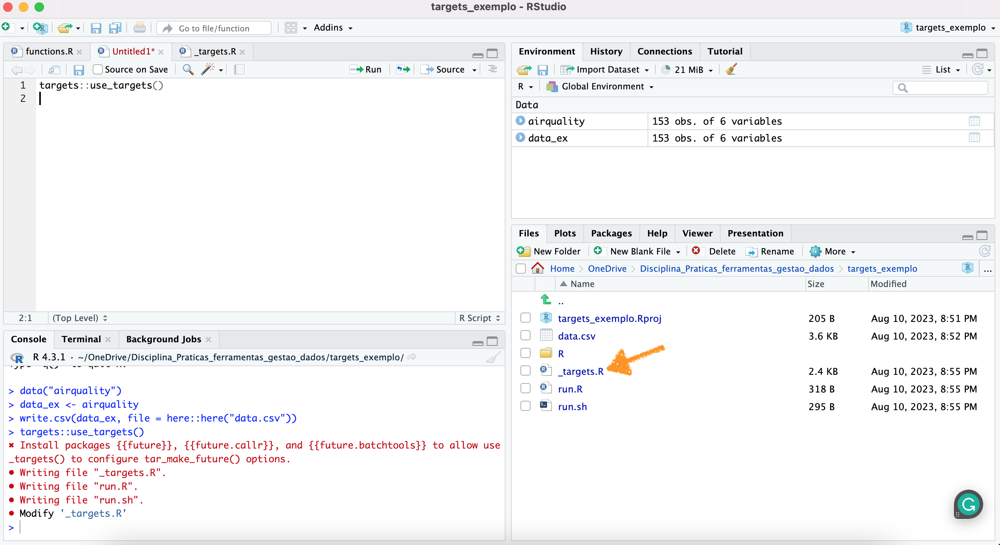
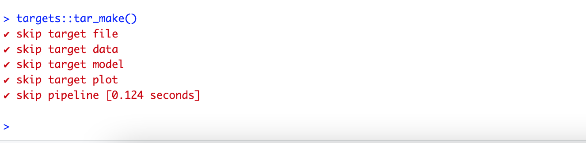
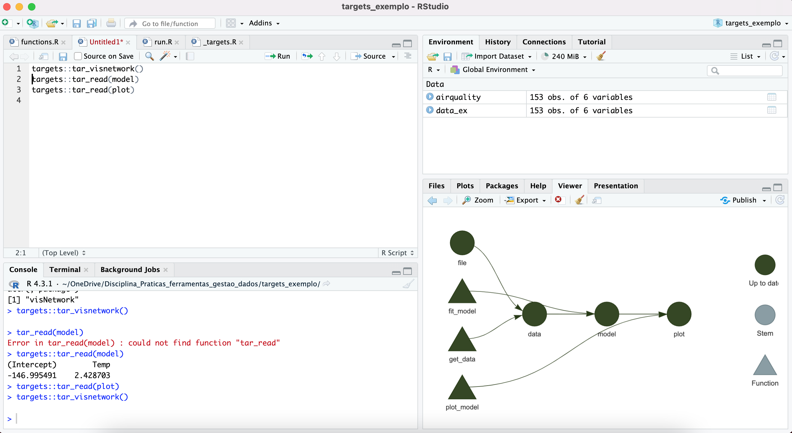
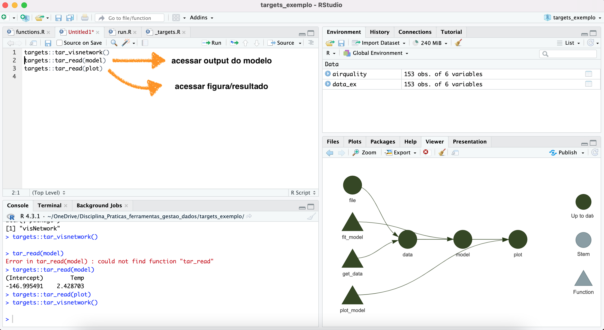

Algumas análises são extremamente demoradas para rodar, mas um
trabalho reprodutível computacionamente requer que estas análises rodem
repetidamente, porém isso pode custar muitas horas, ou até mesmo dias
para rodar algumas rotinas. Uma solução para otimizar a sequência de
trabalho é o pacote {targets}
{targets}O pacote {targets} possibilita otimizar a sequência de
trabalho (pipeline) por organizar esta sequência e identificar ações na
pipeline que devem ou não devem ser realizadas.
Para ilustrar o uso do pacote targets vamos utilizar um exemplo contido na própria documentação do pacote.
Neste exemplo vamos analisar a relação entre quantidade de ozônio e
temperatura em um conjunto de dados presentes no próprio R base chamado
airquality. Para tanto precisamos seguir uma sequência de
análise de dados, que, basicamente, consiste em:
Ler e manipular a tabela de dados
Rodar um modelo relacionando ozônio e temperatura
Gerar resultados gráficos (figuras) para o modelo ajustado
A base de dados pode ser lida da seguinte forma
Imagine que estes dados estão organizados em um diretório local inicializado a partir de um .Rproject e ele apresenta a seguinte estrutura:
Uma pasta data contendo os dados
Uma pasta R contendo:
Esta seria uma pasta organizada, tal como vimos durante as aulas. Porém, para que o pacote targets funciona precisamos transformar esta estrutura de acordo com um pipeline targets, que por sua vez necessita da seguinte estrutura:

Neste diretório precisamos transformar a sequência apresentada
anteriormente em uma sequência de funções. Portanto os scripts na pasta
R serão transformados em funções que serão colocadas dentro da pasta R,
com o nome de functions.R, e que apresentará a seguinte
forma:

Veja que a mesma sequência de análise está agora representada como funções, naquilo que chamamos de uma pipeline function. Este formato é necessário pois apenas assim o targets irá funcionar.
Uma vez organizado assim, devemos utilizar uma função do pacote targets para gerar um workflow do tipo target. Isso será feito da seguinte maneira:
Isso criará um documento na raiz do seu projeto denominado
_targets.R, como ilustrado na figura abaixo, que representa
um diretório que segue um workflow do targets

O documento criado informará a sequência do workflow de análise que o pacote targets deve seguir. Após editar o documento para este exemplo ele ficará da seguinte forma
# _targets.R file
library(targets)
source("R/functions.R")
tar_option_set(packages = c("readr", "dplyr", "ggplot2"))
list(
tar_target(file, "data.csv", format = "file"),
tar_target(data, get_data(file)),
tar_target(model, fit_model(data)),
tar_target(plot, plot_model(model, data))
)Neste exemplo o arquivo apresenta os seguintes componentes:
As funções necessárias para rodar o workflow
os pacotes necessários
uma lista que indica a sequência que o workflow deve obedecer
Para rodar o workflow via targets usamos a seguinte função
A sequência do workflow vai iniciar e o tempo decorrido vai aparecer no console

Uma das vantagens do target é que podemos visualizar a sequência do workflow e se ele está atualizado ou não. Para isso usamos a seguinte função
Esta função vai produzir um gráfico como mostrado nesta figura

Podemos também acessar o output do workflow
